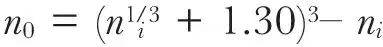
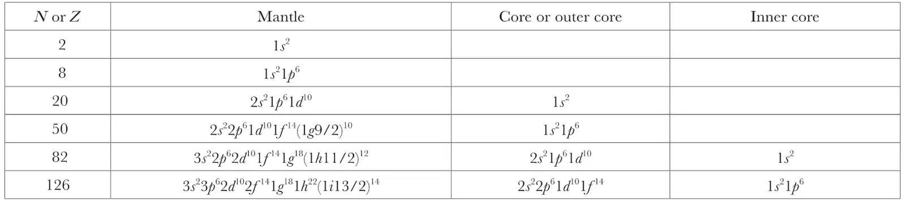
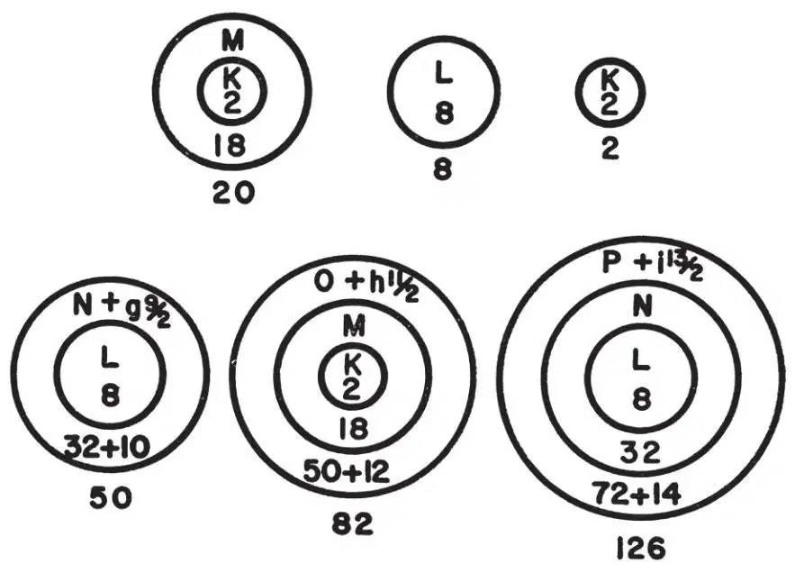

中文
中文L. Pauling
Editor’s Note
Physicists by the mid 1960s had noted the surprising stability of atomic nuclei having certain “magic numbers” of either protons or neutrons, including 2, 8, 20, 50, 82 and 126. Here American chemist Linus Pauling offers an explanation. These numbers do not correspond to atomic shells being completely filled with fermions (particles with spin 1/2, like protons and neutrons). However, they do appear to correspond to closed shells of nucleons which achieve efficient packing in space, possibly with an extra halo of alpha particles. For example, the magic number 50 arises as 8 neutrons or protons in a closed-shell core, and another 42 in an outer halo. These magic-number nuclei have a higher average binding energy than other nuclei. 中文
IN 1933 Elsasser1 pointed out that some of the properties of atomic nuclei correspond to greater stability for certain numbers of neutrons and protons (given the name magic numbers) than for other numbers; the magic numbers for both N (neutron number) and Z (proton number) are 2, 8, 20, 50, 82 and 126. (Less-pronounced effects are observed also for N or Z equal to 6, 14, 28, 40, and some larger numbers. The set of magic numbers is often assumed to include 28.) 中文
The magic numbers do not have the values (2n2) for completed shells of fermions (with all states with total quantum number n, azimuthal quantum number l ≤ n–1, occupied by pairs), which are 2, 8, 18, 32, 50, …, nor the values for certain shells and sub-shells that lead to maximum stability for electrons in atoms, which are 2, 10, 18, 36, 54 and 86. 中文
It was discovered by Mayer2 and by Haxel, Jensen and Suess3 that the magic numbers can be accounted for by use of the sub-sub-shells corresponding to spin-orbit coupling of individual nucleons; that is, to the values of j = l + 1/2 and l – 1/2 for the two sub-sub-shells of each sub-shell. For example, they4 assign to N or Z = 50 the configuration (1s1/2)2(1p3/2)4(1p1/2)2(1d5/2)6(2s1/2)2(1d3/2)4(1f7/2)8(2p3/2)4(1f5/2)6(2p1/2)2(1g9/2)10, which may be written more briefly as 1s21p61d102s22p61f14(1g9/2)10. 中文
The evidence for spin-orbit coupling and for the Mayer–Jensen shell model is convincing. It is, however, difficult to understand, on the basis of their arguments, why the six magic numbers should be outstanding among the many numbers corresponding to the completion of spin-orbit sub-sub-shells, which (for the Mayer–Jensen sequence4 of energy-levels) are 2, 6, 8, 14, 16, 20, 28, 32, 38, 40, 50, 56, 64, 68, 70, 82, 92, 100, 106, 110, 112, 126, 136, 142, …. 中文
In the course of developing a theory of nuclear structure based on the assumption of closest packing of clusters of nucleons5, I have found that the magic numbers have a very simple structural significance: 2 and 8 correspond to the closed shells 1s2 and 1s21p6, and the others to a closed-shell core with an outer layer (the mantle of the nucleus) containing the number of spherons (helions6, He4, tritons, H3, or dineutrons) required to surround the core in closest packing. 中文
Triangular (icosahedral) closest packing, as found, for example, in the intermetallic compound7 Mg32(Al,Zn)49, involves the sequence 1, 12, 32, 72 of spheres in successive layers. These numbers are approximated by the equation

, in which n0 is the number of spheres in an outer layer and ni is the number in the core. (The form of this equation corresponds to assigning equal effective volumes to the spheres, and the value of the constant reflects the nubbling of the surface and the packing of outer spheres into pockets of the core.) This equation can be applied to obtain the number of spherons in the successive layers in a nucleus, and thus to obtain the sequence of nucleonic energy-levels. Sub-shells (with given value of l) occurring once (as 1s, lp, etc.) are assigned to the mantle of spherons, those occurring twice (1s and 2s, for example) to the mantle and next inner layer, and so on. Thus I interpret the configuration for N or Z = 50, given above, as representing 8 neutrons or protons in the core (1s21p6) and 42 in the outer layer (2s22p61d101f 14(1g9/2)10). 中文
The application of the packing equation leads to a sequence of levels essentially as given by Mayer and Jensen, but often with sub-sub-shells for different layers being filled over overlapping ranges of values of N or Z. For example, the 3s1/2, 2d3/2, and 1h11/2 sub-sub-shells all begin to be occupied at about N or Z = 60 and are all completed at about N or Z = 82. 中文
The configurations found in this way for the magic numbers are given in Table 1 and Fig. 1. Each of the first two represents a completed shell. The third (20) has a completed shell as core and another as mantle. Each of the others has a core of a completed shell or two completed shells, with a mantle that is required by the packing to include a sub-sub-shell (1g9/2)10 for 50, (1h11/2)12 for 82, and (1i13/2)14 for 126. Until 184 is reached, there are no other values of N or Z for which the packing equation leads to a core consisting of layers that are completed shells. 中文
Table 1. Nucleon configurations for magic numbers


Fig. 1. The magic-number structures of atomic nuclei 中文
I conclude that the stability that characterizes the magic numbers results from the completion of shells for a single layer (2, 8) or two layers (20) of spherons, or, for the larger magic numbers (50, 82, 126), for the core layers, the mantle having a completed shell plus a completed sub-sub-shell. 中文
(208, 174; 1965)
L. Pauling: Big Sur, California.
References:
1. Elsasser, W. M., J. Phys. et Radium, 4, 549 (1933); 5, 389, 635 (1934).
2. Mayer, M. Goeppert, Phys. Rev., 75, 1969 (1949).
3. Haxel, O., Jensen, J. H. D., and Suess, H. E., Phys. Rev., 75, 1766 (1949); Z. Physik, 128, 295 (1950).
4. Mayer, M. Goeppert, and Jensen, J. H. D., Elementary Theory of Nuclear Shell Structure, 58 (John Wiley and Sons, Inc., New York and London, 1955).
5. This theory is described in papers to be published in Phys. Rev. Letters, Proc. U. S. Nat. Acad. Sci., and Science.
6. Pauling, L., Nature, 201, 61 (1964): Proposal of the name helion for the α-particle.
7. Bergman, G., Waugh, J. L. T., and Pauling, L., Nature, 169, 1057 (1952); Acta Cryst., 10, 254 (1957). Pauling, L., The Nature of the Chemical Bond, third ed., 427 (Cornell University Press, Ithaca, New York, 1960).